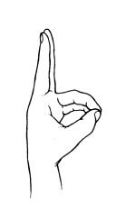
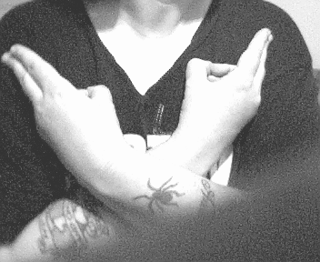

|
| 1. Sit comfortabley, relax and go into a meditative state.
2. Cross your arms as shown in the photo at the bottom of the page. Your hands should be touching your shoulders near your arm pits.
| 
| 3. Position your hands so your thumb connects with your ring and little finger, leaving your index and middle fingers pointed straight.
4. Take a deep breath and nod your head so your chin is gently pressed against your chest. Keep your chin against your chest during each exhale, only raising your head to inhale.
5. Focus your attention on your 4th/Middle chakra. Exhale and vibrate "AUM"
AH-AH-AH-UUUUUU-MMMMMMM
|
Click Here for AUM Mp3 Audio
6. Focus the vibration into your 4th/Middle chakra chakra.
7. Extend the M-M-M-M-M until you have completely exhaled. Try to adjust the tone so you feel it in the middle of your chest where your 4th/Middle chakra is located.
8. Repeat eight times. |

| 9. Visualize the image at left, where your 4th/Middle chakra is and see your 4th/Middle chakra engulfed in a vibrant green aura and focus your attention on feeling your 4th/Middle chakra for
several minutes.
Try to adjust the tone so you feel it in the middle of your chest where your 4th/Middle chakra is located.
|


About the Heart Chakra
BACK TO OPENING THE SOUL
BACK TO MAIN POWER MEDITATION PAGE
© Copyright 2005, 2016, 2018, Joy of Satan Ministries;
Library of Congress Number: 12-16457

|